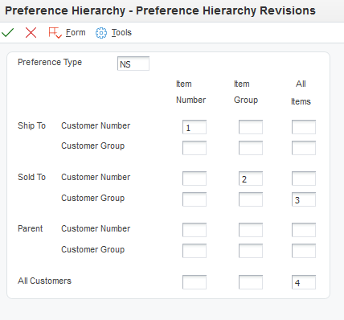
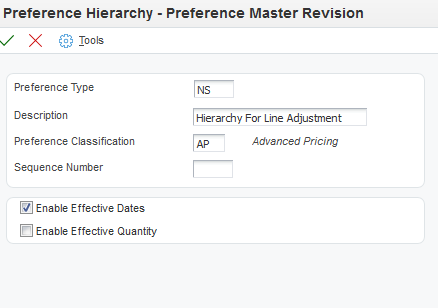
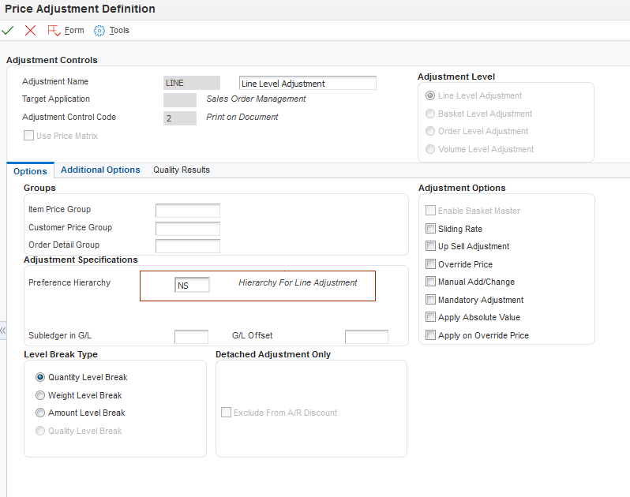
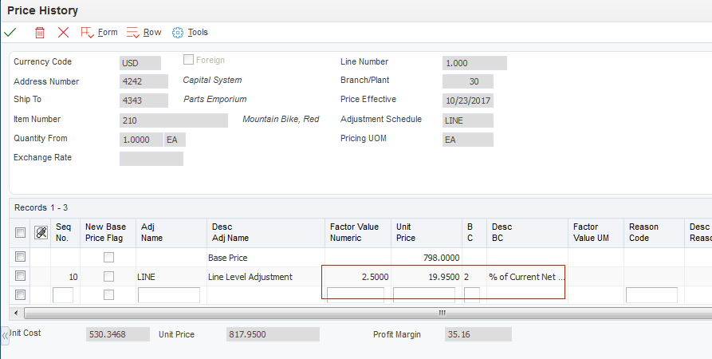

| Purpose |
| Scope |
| Details |
| Setup |
| Price Adjustment Definition (P4071) |
| Price Adjustment Detail Revisions (P4072) |
| Advanced Pricing Process Flow |
| Examples |
| Frequently Asked Questions |
Overview
The Preference Hierarchy (P40073) is part of the mandatory set up in order for Advanced Pricing to work. Customers must determine their hierarchy and understand that the Preference Hierarchy program (P40073) is used by the system to search and apply the Price to an order either within the Price History (P4074) or directly to the detail line (Order level adjustments).
The Preference Hierarchy is designed to work from most specific to most general when doing a search for a price adjustment.
In this example, a simple, 4-level hierarchy might indicate “First search the details that match both the customer and item number specifically. If no adjustment is found, then search the details that use Customer Group and Item number” If any adjustments exist for the Customer Group/Item then the system will stop and apply the adjustment that has been found and no further search will occur.
Note: The user can enter up to 21 hierarchies however; Oracle recommends limiting the use to 3 to 4 hierarchies for better performance per adjustment. The more hierarchies found within the Preference Hierarchy program, the longer the system will take to find and return the adjustments to the order.
Advanced pricing uses the Preference Hierarchy to locate which adjustments need to be applied. Note this same program works for Base price and Advanced Preferences and functions exactly the same. This feature is available in all EnterpriseOne releases for both Sales and Procurement.
The user can find the Preference Hierarchy in the Advanced Pricing Menu G4231112.
The user can create a new Preference Hierarchy, or use an existing Preference Hierarchy.
Note: In 8.12 and higher releases; the user has the ability to create the Preference Hierarchy on the fly-meaning the user does not need to create the Preference type UDC 40/PR prior to the add function. Prior to 8.12; the user should first create the Preference type in the UDC 40/PR then create the hierarchy. Upon creating this in the UDC the Special Handling Code should be left blank. A value of ‘1’ will result in the hierarchy being available for Advanced Preferences, not Advanced Pricing Adjustments.
This example is during Add mode:

Click OK and a new screen will appear:

The Price adjustment Definition is where the user will add the Preference Hierarchy they created into the Preference Hierarchy field.

The user also has the ability to view/change the hierarchy within this form, by going to the Form exit and selecting Preference Hierarchy:


Note the system located the Hierarchy ‘NS’ because the value is being pulled in from the Adjustment Definition. If the user wishes to view all available Hierarchies then the Preference Hierarchy within the Adjustment Definition must remain blank and the system will display the UDC 40/PR. Note: When the system displays all available Hierarchies via this method it will display all hierarchies, including base price hierarchy and advanced preference hierarchies. The user should know which hierarchy they wish to locate that is related to Advanced Pricing before doing this search.
In this Hierarchy example: The system will first search by ship-to/item number and if no adjustment is found then it will search by sold-to/item group and continue searching until a detail adjustment has been located. If none of the hierarchy levels have an available adjustment no adjustment price will be applied to the order within the Price History (P4074).
For further information on setting up an Item or Customer group, see Complex Groups in Advanced Pricing (P4092/P4093W/R40932/P4071/P4072/P4073)
After adding the Adjustment Definition (P4071), the user will create the Adjustment Details (P4072).
On Work with Adjustment Detail, enter the Adjustment Name and click Add. The first screen that is displayed is pulling from the Hierarchy type that was applied to the Adjustment Definition (Name).

Here the user needs to be aware which selection belongs to the ship-to or sold-to. Remember in the ‘NS’ example above, the first selection item/customer the customer is the ship-to not the sold-to. This is not displayed in this screen so if the user selects the first selection and adds a sold-to number by item the system will not locate this detail if the sold-to (AN8) and ship-to (SHAN) are different values.
In this example there are two detail adjustments. The first detail adjustment is by item group and customer (sold-to 4242) and the second detail adjustment is by item (210) and customer (ship-to 4343).

Remember that each adjustment detail belongs only to one hierarchy level of one adjustment. The user will not be able to enter multiple detail adjustments within the same detail; they have to create a separate adjustment detail for different hierarchy levels.
Note: The user must attach the adjustment definition to a schedule in order to have pricing pulled in.

Example 1
Assumptions

Price History

This is correct because the system found the first hierarchy of ship-to/item number and applied that discount.
Example 2
Assumptions

Price History

Question 1: What if a user removes one of the hierarchy levels and leaves the adjustment detail for that hierarchy level within the Adjustment details (P4072)? Will the adjustment still apply to the sales order?
Answer 1: No, once the user removes the hierarchy level and the system cache is refreshed (log out and back into the system), the adjustment detail will no longer be found.
Question 2: Is it possible to have the system hit more than one hierarchy level for adjustments? In other words we would like more than one detail from that adjustment to be applied.
Answer 2: Since the hierarchy is designed to hit one level and stop, the only workaround is to create multiple adjustment definitions with the same Hierarchy type. Attach these definitions to the Adjustment Schedule and more than one adjustment detail level can be applied.
Question 3: Does the hierarchy affect all adjustment types? Basket, order, volume etc..
Answer 3: Yes this is standard functionality for all adjustment types. The user will not be able to create an Adjustment Definition (P4071) without a hierarchy being attached. If the user tries to save the adjustment definition without a hierarchy the user will get a hard error. Error 0003 ‘Blanks Invalid’ and the Hierarchy Type field will be in red. The user must attach a hierarchy in order to save the adjustment definition.

Question 4: Are we able to change a number of adjustments, changing the adjustment hierarchy. What is the impact of such a change? Are there any concerns?
Answer 4: You can change the adjustment hierarchy. We do recommend testing your process in a test environment with multiple orders to verify the results you receive are the desired results. Then, the changes can be made in the production environment. The Update Sales Price / Cost / Exchange Rate can be run to update the price on orders. See our knowledge document Update Sales Price / Cost / Exchange Rate (R42950).